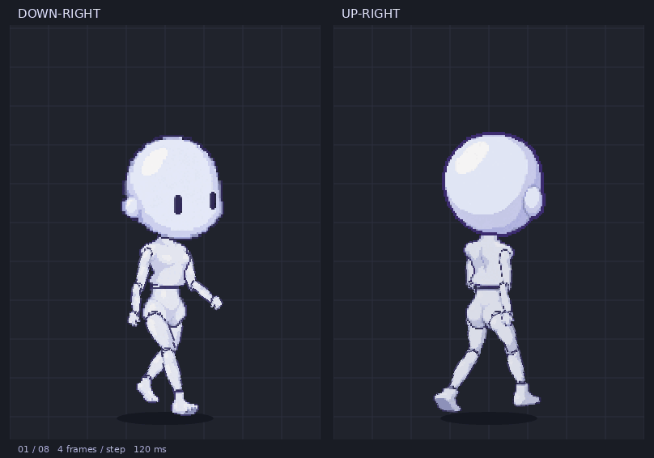

CURRENT BASELINE · plain-walk-v13
プレーンな素体の5方向・8コマ歩行。最新版の素材とコード、会話記録、配置、修正の経緯をまとめています。
確認・調整用プレイヤーを開く ／ 5方向GIF ／ 部位一覧

最後の変更：斜め2方向の頭をv12からさらに2 px背中側へ。高さと歩行は維持。v13への明示的な最終承認は未記録です。
説明書を読む（HTML） ／ 引き継ぎ用の文章 ／ 入口の説明（Markdown）
97素材の寸法・支点 ／ 全40コマ・1160描画配置 ／ 関節座標 ／ 斜め配置の数値履歴
設定JSON ／ 素材JSON ／ 全コマのリグJSON
制作会話の記録 ／ ユーザー発言JSON ／ 確認できる応答JSON
元キャラクター ／ 歩行参考GIF ／ 元ルミナの試作06
19版の展開済み作業フォルダー、生成原画像27枚、元の添付2件、診断用画像・スクリプトをworkspaceへ保存しています。
会話は確認できる制作発言を保存したものです。初期の応答全文・全ツールログを含む正式なチャット全体エクスポートではありません。収録範囲の詳細
検証記録 ／ ファイル一覧・SHA-256 ／ 展開後の照合スクリプト